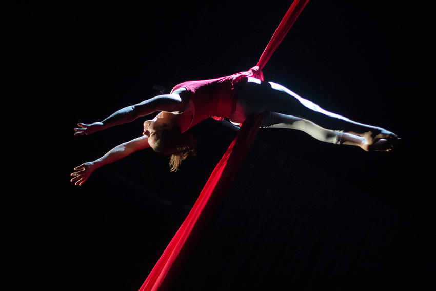

RoguePlay Aerialists Showcase

RoguePlay Theatre, Birmingham’s Highly Physical Theatre Company, are having their latest Aerialists Showcase on Saturday 9th May, 7.30pm -10.30pm, in Digbeth, Minerva Works on Fazeley Street. RoguePlay, founded in 2009, can most likely be found hanging from a trapeze, or silk, balancing, lifting or throwing one another, all while speaking a monologue, singing a song … [Read more…]